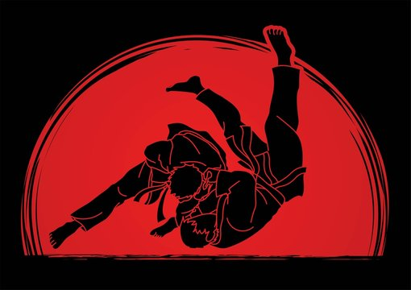

Auch Aufwärmübungen könnt ihr zuhause perfekt üben. Dazu folgt einfach den Übungen im Video:
Allgemein (5 Min):
Laufen (vorwärts/rückwärts/seitlich)
Mobilisation (Arm-/Hüftkreisen, Rumpfdrehen)
Judo-spezifisch (10 Min):
Fallschule (Vorwärts-/Rückwärtsrolle, Seitfall)
Bewegungsformen (Gleitschritte, Uchi Komi)
Partnerübungen (leichter Griffkampf, Zug-/Schiebe-Übungen)
Dehnen/Aktivierung (5 Min):
Dynamisches Dehnen (Beinschwünge, Hüftdehnung)
Kurze Kraftübungen (Plank, Brücke)
Ziel: Sicher fallen, Verletzungen vermeiden.
Vorwärtsrolle (Mae Ukemi):
Diagonale Abrolllinie (Schulter → Hüfte)
Hand leicht aufschlagen
Rückwärtsfall (Ushiro Ukemi):
Rundrücken, Kinn zur Brust
Beide Arme seitlich schlagen
Seitfall (Yoko Ukemi)
Arm wie "Stoppschild" vor Körper
Seitlich mit Arm/Hüfte abfedern
Pro-Tipps:
Immer ausatmen! ("Hooo!")
Kopf schützen (Kinn anziehen)
Täglich 5 Min üben → wird automatisch
Wer gut fällt, kann mutiger werfen
Aufwärmen (10 Min)
Laufen, Fallschule, Uchi Komi
Techniktraining (20 Min)
1–2 Standtechniken (z. B. O-Soto-Gari + Seoi-Nage)
1 Bodentechnik (z. B. Kesa-Gatame → Würger)
Randori (15 Min)
5 Min Stand, 5 Min Boden, 5 Min Freies Randori
Kraft/Kondition (10 Min)
Judo-spezifisch: Clinch-Übungen, Burpees, Planks
Cool-Down (5 Min)
Dehnen (Hüfte, Schultern, Rücken)
Stand-Randori (Tachi-Waza)
Leichtes Kämpfen im Stand
Fokus: Wurftechniken üben
Boden-Randori (Ne-Waza)
Start: Knien oder liegend
Fokus: Haltegriffe, Hebel, Würger
Situatives Randori
Nur bestimmte Techniken erlaubt (z. B. nur Fußwürfe)